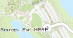
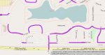
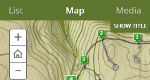
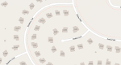

All Work Projects

My Community Maps Story

Updating Streets in OSM

Archery Trail Mapping

OSM - Buildings and Address Bulk Upload
My Community Maps Story
Updating Streets in OSM
Archery Trail Mapping
OSM - Buildings and Address Bulk Upload